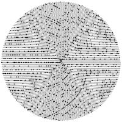

Cvičení
Procvičování – hrátky s čísly
Hrátky s (celými) čísly – zkuste vyřešit následující úlohy:
- Sečtěte zadanou posloupnost celých čísel.
- Zapište zadané číslo pozpátku.
- Zjistěte ciferný součet zadaného čísla.
- Spočítejte faktoriál zadaného čísla.
- Spočtěte prvních n členů Fibonacciho posloupnosti.
nápověda
range(), výřezová notace [:], dělení deseti, převod na řetězec…
„3n+1 problém“: Vezměte libovolné přirozené číslo n a aplikujte na něj následující algoritmus:
- Je-li n sudé, pak nové
n = n // 2. - Je-li n liché, pak nové
n = 3 * n + 1.
nápověda
Dosud nevyřešený problém známý též pod jmény Collatzův, Ulamův, Syrakuský…
Pokračujte v analýze „3n+1 problému“ za pomoci seznamů a n-tic:
- Pro každé číslo zaznamenejte kroky, kterými výpočet prošel.
- Seřaďte prozkoumaná čísla podle počtu těchto kroků.
- Pro každé číslo zaznamenejte nejvyšší číslo, ke kterému algoritmus došel.
- Pro které vstupní číslo je toto číslo největší? Prozkoumejte vstupní čísla postupně do 10^3, 10^4, 10^5…
- Zjistěte posloupnost tzv. „rekordmanů“, tedy čísel, pro něž je počet potřebných kroků větší než pro všechna čísla předchozí. Posloupnost začíná čísly 1, 2, 3, 6, 7, 9, 18, 25, 27, 54…
nápověda
Zaznamenávejte řešení například v podobě:
[ (číslo-1, [řešení]), (číslo-2, [řešení]), … ]
Zkuste naimplementovat vyhledávání prvočísel pomocí Eratosthenova síta:
- připravte seznam
[2, 3, 4, …, MAX]; - odstraňte ze seznamu první prvek zleva – je to prvočíslo;
- odstraňte ze seznamu všechny násobky prvku odstraněného v předchozím kroku;
- opakujte kroky 2+3 tak dlouho, dokud je ze seznamu co odstraňovat nebo dokud není prvočíslo z kroku 2 větší než √MAX.
nápověda
range(), list.append()
S prvočísly souvisí mnoho krásných a zhusta nevyřešených problémů. Jedním z nich je tzv. Ulamova spirála – vypíšete-li přirozená čísla do spirály, mají prvočísla výraznou tendenci shromažďovat se na některých úhlopříčkách (a i jiných příčkách). Matematicky – ze zatím neznámého důvodu generují některé vzorce
Její ještě zajímavější varianta pochází od Roberta Sackse z roku 1994 – místo Ulamovy čtvercové spirály použil spirálu Archimédovu, přičemž na jednu otočku vychází právě jedno čtvercové číslo (druhá mocnina celého čísla). V této projekci se některé dříve zdánlivě nesouvisející části přímek stávají křivkou jedinou:
Zkuste postupně splnit následující úkoly:
an2+bn+c prvočísla výrazně „častěji“ než jiné. Historicky objevil tuto závislost již Klauber v roce 1932 v podobě trojúhelníku a jako spirálu ji poprvé popsal A. C. Clark (v románu!), nicméně skutečně ji vytvořit zkusil až Ulam v roce 1963:
Její ještě zajímavější varianta pochází od Roberta Sackse z roku 1994 – místo Ulamovy čtvercové spirály použil spirálu Archimédovu, přičemž na jednu otočku vychází právě jedno čtvercové číslo (druhá mocnina celého čísla). V této projekci se některé dříve zdánlivě nesouvisející části přímek stávají křivkou jedinou:

(obrázek Claudia Rocchiniho)Zkuste postupně splnit následující úkoly:
- vypište vybraný počet přirozených čísel, přičemž prvočísla nějak zvýrazněte (barvou, podkladem…);
- zopakujte si předchozí krok, ale vypište čísla do trojúhelníku (postupně jedno, dvě, tři a tak dále);
- znovu, ale tentokrát vypište čísla do čtvercové spirály jako Ulam;
- nyní zkuste napodobit Sackse;
- najděte ještě vtipnější projekci, která odhalí něco o přirozených číslech, a proslavte se!
nápověda
Vzpomeňte si na Contact ^_~
Jinak bohužel vycentrování pro vykreslení trojúhelníku není tak jednoduché, jak by mohlo – při použití ANSI escape codes sice len() hlásí očekávanou délku řetězce bez nich, ale center() to vidí jinak…
Jinak bohužel vycentrování pro vykreslení trojúhelníku není tak jednoduché, jak by mohlo – při použití ANSI escape codes sice len() hlásí očekávanou délku řetězce bez nich, ale center() to vidí jinak…
Inspirace pro úlohy 2 a 3: Radek Pelánek: „Programátorská cvičebnice“ (ComputerPress, Brno 2012)